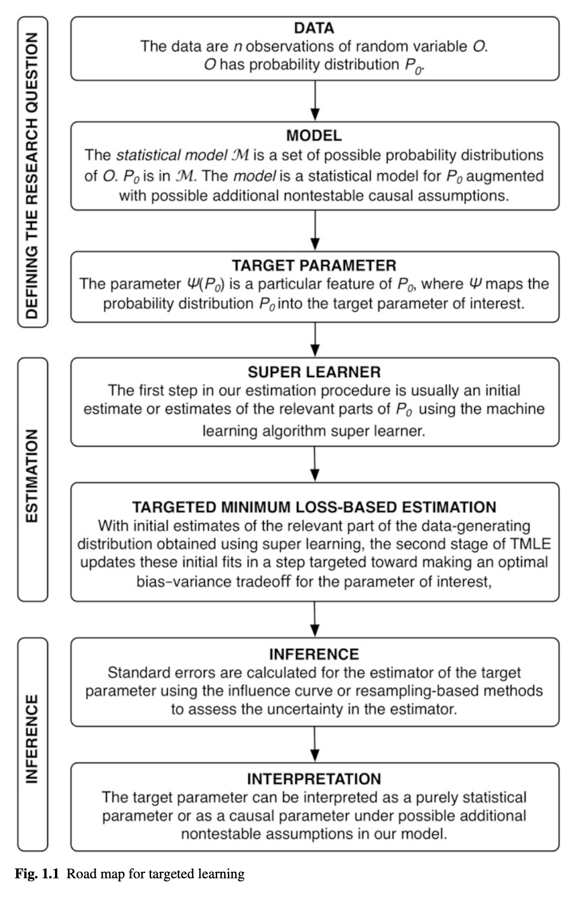

7 Targeted Learning: Causal Inference for Observational and Experimental Data
Notes on Targeted Learning: Causal Inference for Observational and Experimental Data by Mark J. van der Laan and Sherri Rose.
https://link.springer.com/book/10.1007/978-1-4419-9782-1
I try to keep a really clear focus on what information is new to me when I’m reading material that covers a topic I already have some relationship to. Thus, you may find that these notes are incomplete from the standpoint that they’re not designed to be an introduction to the material, or to walk the reader through the book, but rather my own way of cataloguing my progress in catching up with the thinking in the field and described in the book.
8 Forward(s), Preface
One of the things I’ve noticed is that while practitioners seem split on Pearl’s do-calculus, it does make certain statements more conceptually clear. For example, the consistency assumption sounds a little bit silly when written in English words, but in do-calculus is is quite clear.
For example, from (Rekhopf et al, 2016):
The consistency assumption implies that an individual’s potential outcome under his or her observed exposure history is the outcome that will actually be observed for that person.
Rewritten in do-calculus, we might say that this is the assumption that \(\mathbb{E}(Y | X) = \mathbb{E}(Y | \text{do}(X))\). That is, we place a distinct focus on the fact that there may be some worthwhile distinction between what happens depending on the level of \(X\), and what happens if we intervene on \(X\). The consistency assumption is a way of setting aside such questions (perhaps for later).
In the preface, I find the convictions behind the philosophy of the authors spelled out quite clearly in this passage:
The field [statistics] is ready for a revolution, one driven by clear, objective benchmarks under which tools can be evaluated. […] Why do we need a revolution? Can we not keep doing what we have been doing? Sadly, nearly all data analyses are based on the application of so-called parametric (or other restrictive) statistical models that assume the data-generating distributions have specific forms. Many agree that these statistical models are wrong. That is, everybody knows that linear or logistic regression in parametric statistical models and Cox proportional hazards models are specified incorrectly. In the early 1900s when R.A. Fisher developed maximum likelihood estimation, these parametric statistical models were suitable since the data structures were very low dimensional. Therefore, saturated parametric statistical models could be applied. However, today statisticians still use these models to draw conclusions in high-dimensional data and then hope these conclusions are not too wrong.
It is too easy to state that using methods we know are wrong is an acceptable practice: it is not! [emphasis by the authors]
Models, Inference, and Truth: Probabilistic Reasoning in the Information Era
Not so many math or statistics books have a philosophical 0th chapter, and I rather kind of enjoyed this chapter mostly because of the following excerpt:
What is reality? Does it exist mind-independently? Do we have access to it? If yes, how? Can we make true statements about it? If yes, what is truth and how is it connected to reality?
Some of my closest friends may know a common trope of mine is to ask (facetiously): “What does it mean to know something? Can we know things?” Do with that what you will.
I won’t re-iterate all of the ideas covered in this philosophical chapter, but there are a few key ideas that are worth contemplating further:
- How do our conceptions of what reality is affect the way in which we go about constructing “models” of it?
- “For a long time, the related concepts of variation and change had a rather pejorative connotation in philosophy and science. It all began with the ancient Greek philosophers who sought an explanation for the different aspects of change: change of location (motion), growth and decay, change in quality and quantity. Its existence was often denied or deemed impossible and reduced to nonchange. Variation was regarded as a deviation from a rule or standard, which at best should be explained. Both were indications of imperfections and unpredictability.”
- What is the role of pragmatics in science?
- “Pragmatists refrain from a correspondence theory or coherence theory of truth but interpret truth as something that works in practice and that makes a difference in real life. For example, Peirce considered science the result of two human interests: the removal of irritation caused by doubt and imperatives to act decisively. It is not surprising that a pragmatists approach to truth and science is appreciated by statisticians, who naturally seek to identify differences and have always worked together on real-world problems.”
- How is it that we settle debates in the philosophy of statistics?
- “Any epistemologist who considers information processes to be fundamental, who wants to do justice to variation and change in reality, and who addresses the tension between a scientific worldview and common sense can hardly neglect debates about immanent trends in statistics and the key problems they pose for the philosophy of statistics. This applies even more if one takes the view that any interesting concept in epistemology and science can only be genuinely developed by considering real-life problems occurring in large-scale knowledge domains. The associated methodology for probabilistic reasoning should be from the same mold.”
Chapter 1
We denote the data as being i.i.d. copies of \(O\), where \(O\) is \(P_0\) distributed.
Specifically, \(O = (W, A, Y) \sim P_0\), where our vector of covariates is \(W\), an exposure or treatment is given by \(A\), and we have an outcome \(Y\).
In some instances, this data structure may need to be augmented. For example, we might have a scenario with right-censoring. In such a case, we could write \(T\) as the time to event \(Y\), \(C\) as the censoring time, \(\tilde T = \min(T, C)\), \(\Delta = I(T \leq \tilde T)\), and then our data as \(O = (W, A, \tilde T, \Delta)\).
We denote the statistical model of which \(P_0\) is an element as \(\mathcal M\).
Formally, a statistical model \(\mathcal M\) is a set of possible probability distributions for \(P_0\); it is a collection of probability distributions.
We make a subtle distinction between a statistical model and a model. A statistical model is a model \(\mathcal M = \{ P_\theta : \theta \in \Theta\}\), where \(\Omega\) is the space of \(\theta\)-values, and \(\Theta\) is infinite-dimensional.
Next we define \(\Psi(P_0)\), which is the target parameter of the probability distribution \(P_0\) mapping the distribution into the target feature. \(\Psi(P_0)\) is defined as a feature of the true probability distribution \(P_0\), that is \(\Psi : \mathcal M \to \mathbb R^d\).
For example, \(\Psi(P_0)\) might be the risk difference, in which case:
\[\Psi(P_0) = \mathbb{E}_{W,0}[\mathbb{E}_0(Y \mid A = 1, W) - \mathbb{E}_{0}(Y \mid A = 0, W)].\]
The Roadmap
This figure repeats a couple of times throughout the book, so I thought it worthwhile to include here:

From page 18.
Chapter 2
Defining a Structural Causal Model (SCM)
We introduce the function \(Pa(\cdot)\), which represents the “parents” of a node in a graph. This allows us to say that
\[X_j = f_{X_j}(Pa(X_j), U_{X_j}), j = 1, ..., J.\]
That is, each node in a graph \(X_j\) is some function of its parents and an exogenous \(U_{X_j}\), which we can think of as the unobserved and stochastic/random factors affecting \(X_j\).
We denote by \(X\) and \(X_j\) the endogenous variables that are nodes in the causal model. Therefore, our observed random variable \(O\) are typically included in \(X\) and have a distribution implied by the distribution of \((U,X)\). There may be other unobserved variables not in \(O\) but that are included in \(X\).
Therefore, we would write
\[W = f_W(U_W),\] \[A = f_A(W, U_A),\] \[Y = f_Y(W,A,U_Y).\]
Defining the Causal Target Parameter
We write \(\mathcal M^F\) as the model for distribution of the full data \((U,X)\), i.e., a collection of possible \(P_{U,X}\) distributions described by the SCM.
We also define the causal target parameter \(\Psi^F : \mathcal M^F \to \mathbb R^d\).
Now, counterfactual outcomes can be denoted as \[Y_1 = f_Y(W, 1, U_Y),\] \[Y_0 = f_Y(W, 0, U_Y),\] \[Y_a = f_Y(W, a, U_Y).\]
We denote endogenous nodes in \(X\) that are not the treatment by a shorthand, \(L\). If there are multiple treatments and multiple other endogenous variables, we index them respectively by \(s\) and \(r\) so that \(X = ((A_s : s), (L_r : r))\).
Statistic interventions on the \(A\)-nodes correspond with setting \(A\) to a fixed value \(a\), while dynamic interventions deterministically set \(A_s\) according to a fixed rule applied to the parents of \(A_s\). […] We will denote such a rule for assigning \(d\) to the intervention nodes… \(d = (d_s : s = 1, ..., S)\) is a set of \(S\) rules. Such rules \(d\) are also called dynamic treatment regimens.
Note that such a modification of the intervention variables could have downstream effects on the other endogenous variables, so we denote the resulting realization by \(L_d(u)\). The random variable \(L_d(U)\) is called a postintervention random variable.
Identifiability
If \(O=X\) and for each \(s\), \(A_s\) is independent of \(L_d\) given \(Pa(A_s)\), then
\[P(L_d = l) = \prod_{r=1}^R P(L_r = l_r \mid Pa_d(L_r) = Pa_d(l_r)).\]
This is the sequential randomization assumption and can be established by verifying the backdoor path criterion.
The backdoor path criterion states that for each \(A_s\), each backdoor path from \(A_s\) to an \(L_r\) node that is realized after \(A_s\) is blocked by one of the other \(L_r\) nodes.